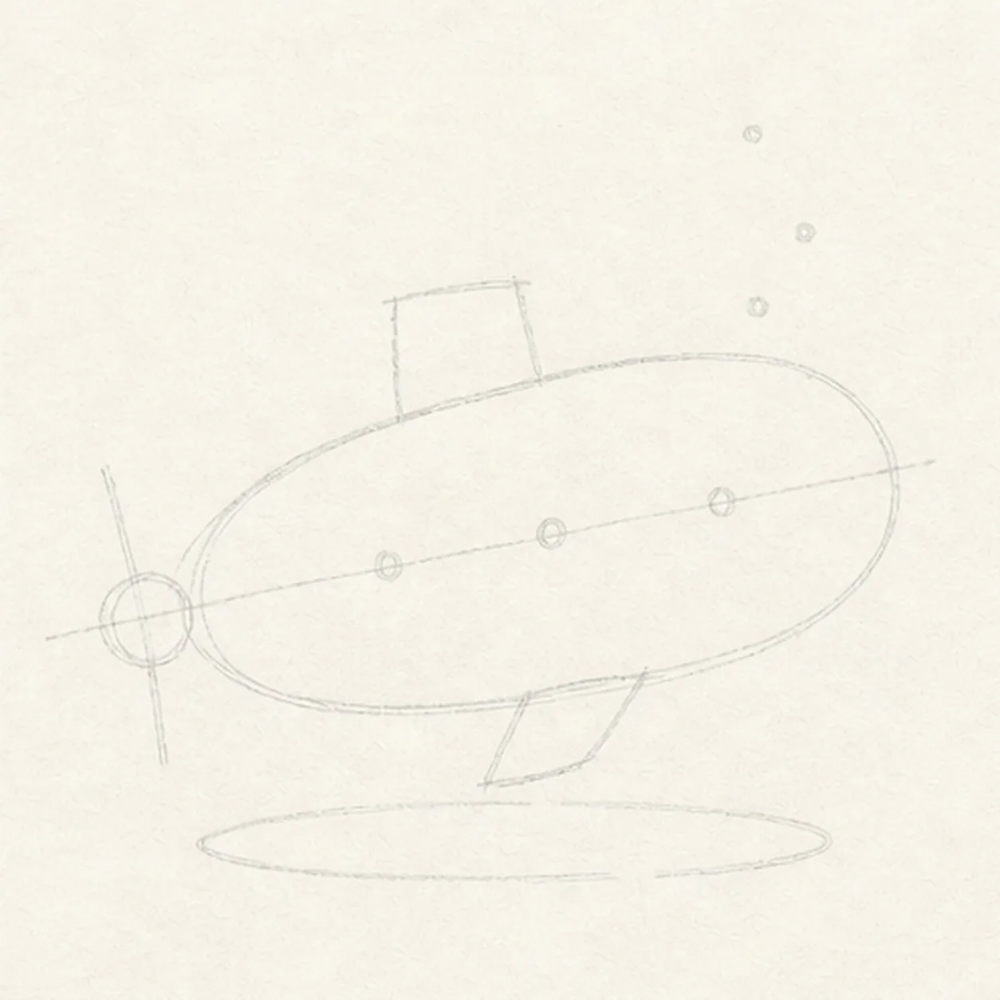
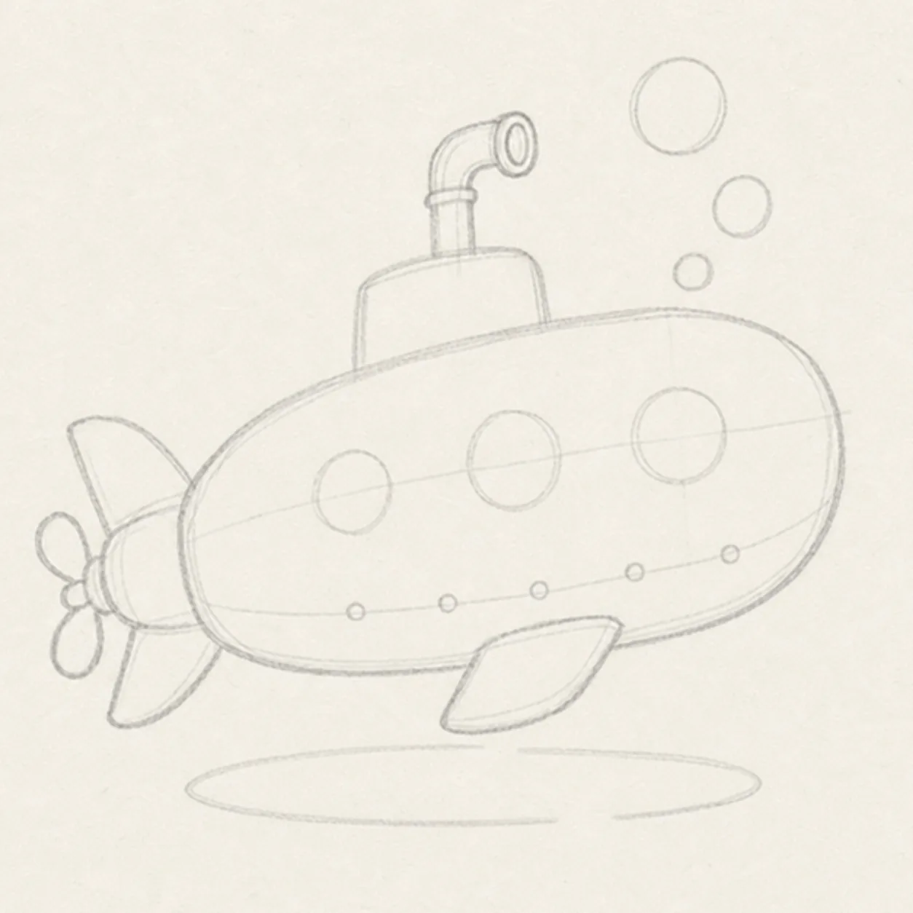
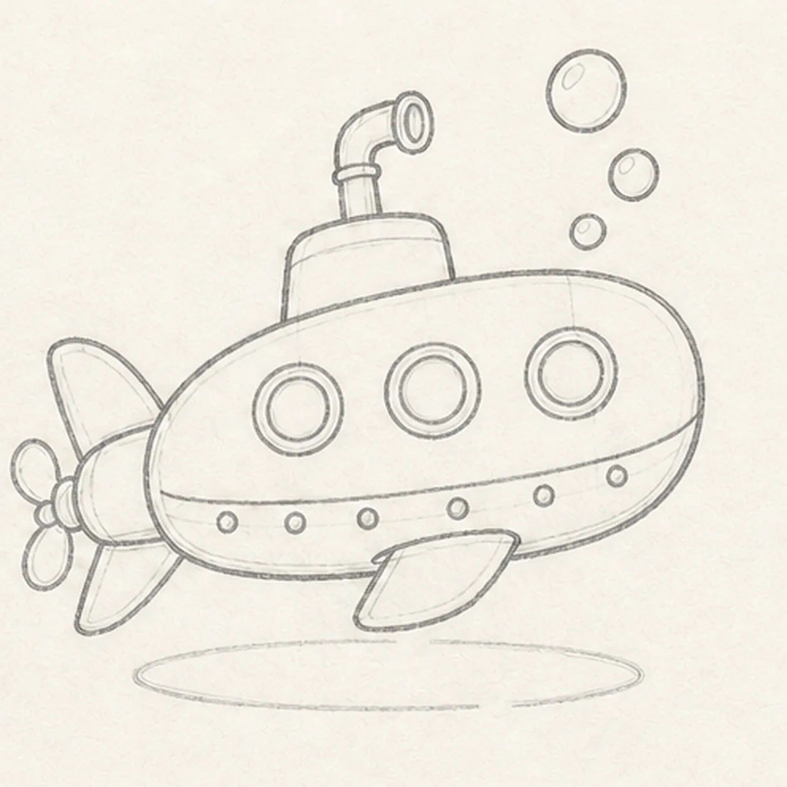
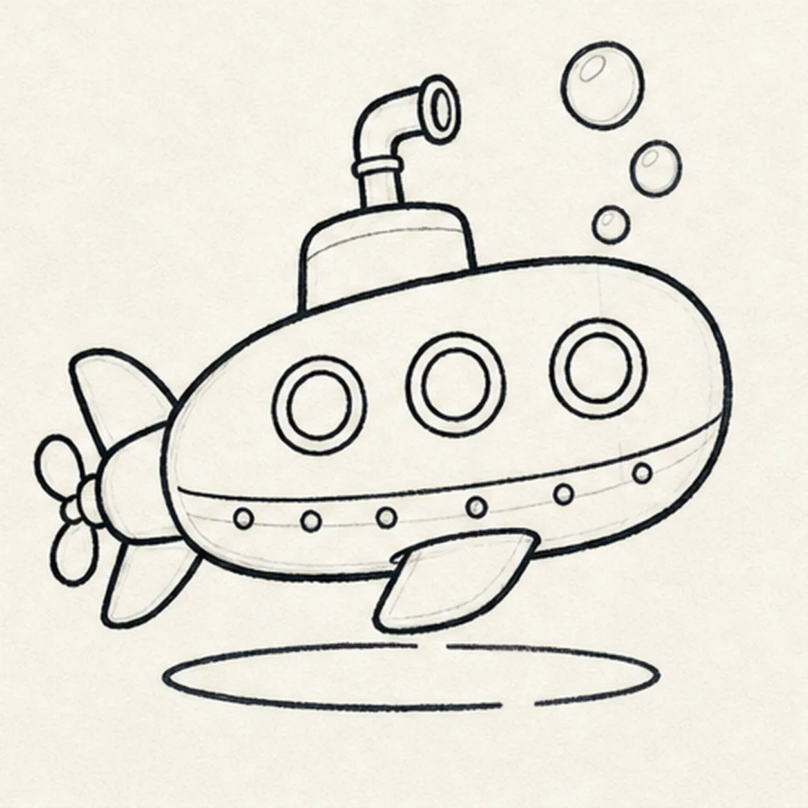
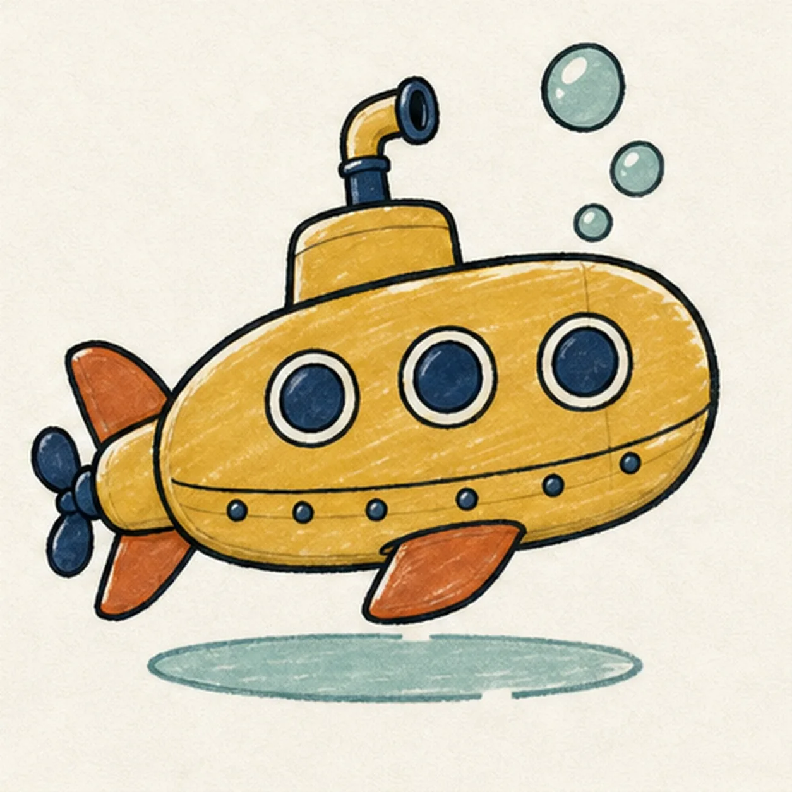

Felt-tip marker mode
Let's draw a cartoon submarine with bubbles
Treat this as one playful practice round: sketch the idea loosely, simplify the shapes, then commit with confident marker outlines and bright fills.
-
01

Set the dive gesture
Draw one pale tilted centerline, wrap it with a loose capsule guide, then mark the small tower box, tail and fin axes, propeller hub, three porthole centers, three bubble centers, and broken shadow footprint. Keep this frame sparse—do not finish the submarine contour yet.
Marker tip: Ghost the capsule twice before touching down. Space the three window dots along the upper half, and keep the fin and propeller axes outside the hull guide so the attachments have room to grow.
-
02

Build the submarine body
Use the map to draw the rounded hull, small tower, bent periscope, tapered tail housing, exactly two tail fins, one lower side fin, the hub plus three light propeller-blade gestures, and three light bubble circles. Leave the window, rivet, seam, and shadow details pale.
Marker tip: Draw the hull before the fins so each attachment tucks behind it. Rotate the page for the long curves, then trace the tower into the bent periscope with your finger to confirm one continuous route.
-
03

Install windows and hardware
Complete exactly three porthole rings, one hull seam, exactly six rivets, the three propeller blades, the three existing bubble guides, and the broken shadow outline in refined pencil. Every shape that the next step inks should now be visible.
Marker tip: Compare the three porthole gaps rather than chasing perfect circles. Count six rivets from tail to nose, then check three blades, three bubbles, two tail fins, and one lower fin before reaching for the marker.
-
04

Ink the dive lines
Trace only the established hull, tower, periscope, fins, propeller, windows, seam, rivets, and bubbles with thick handmade black felt-tip, then reinforce the reserved broken water shadow.
Marker tip: Let the marker follow each long contour in one direction and pause at overlaps. Give the outer hull slightly more weight than the seam and rivets so the silhouette stays readable at thumbnail size.
-
05

Fill the vintage marine color
Add mustard to the hull, deep navy to the windows and accents, rust orange to the fins, and seafoam to the bubbles and shadow, leaving intentional paper highlights.
Marker tip: Fill from each edge inward so the marker streaks follow the hull length and fin direction. Let the navy portholes dry before a second pass so their highlights stay crisp instead of bleeding shut.
-
06
Seal the submarine finish
Thicken selected established black edges, even the existing marker areas, deepen the broken shadow, clarify highlight gaps, and erase only the pale guides that distract.
Marker tip: Count three portholes, six rivets, three bubbles, two tail fins, three propeller blades, and one lower fin. Try different ocean colors if you like, but keep the mechanical counts and overlaps easy to follow.